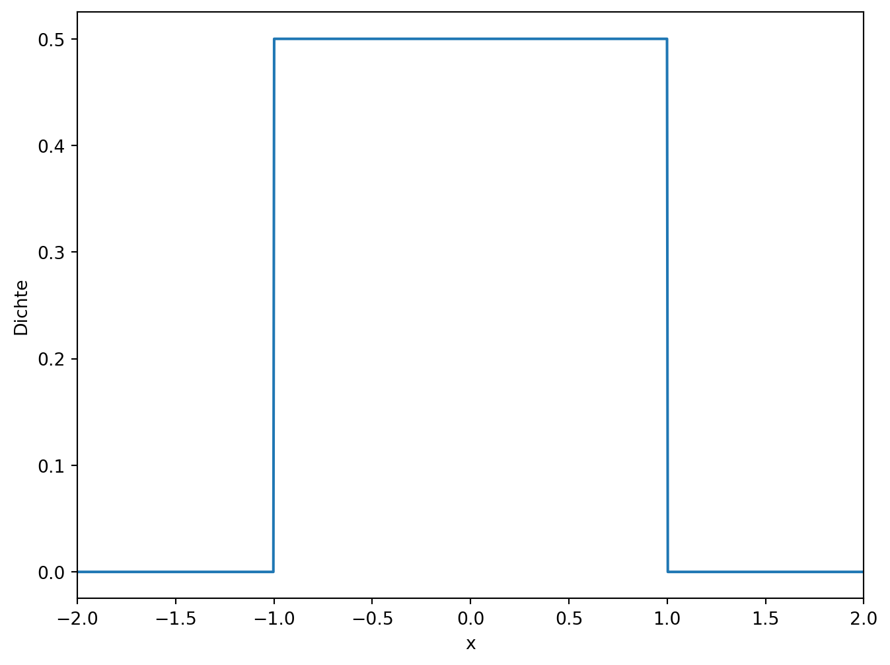
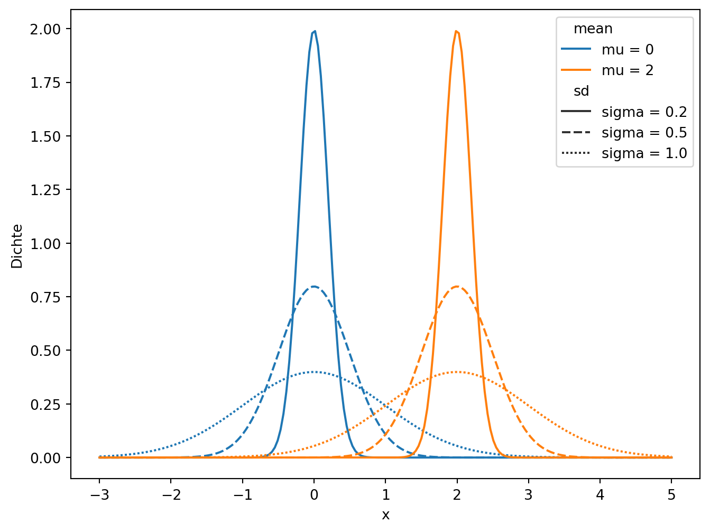
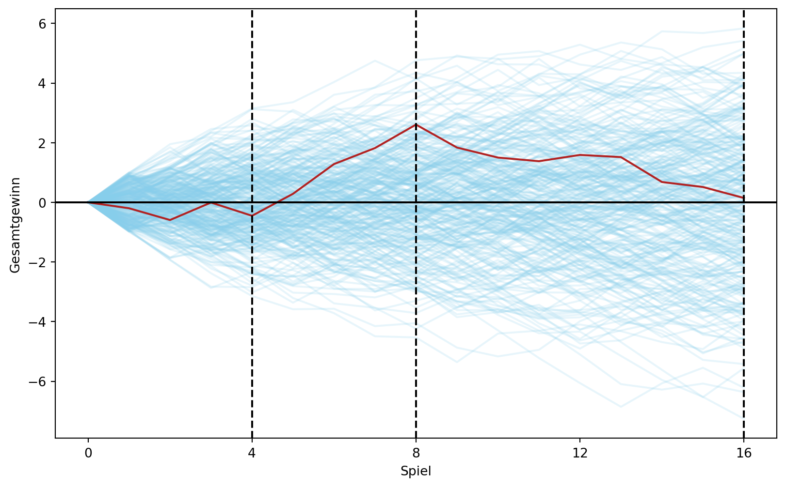
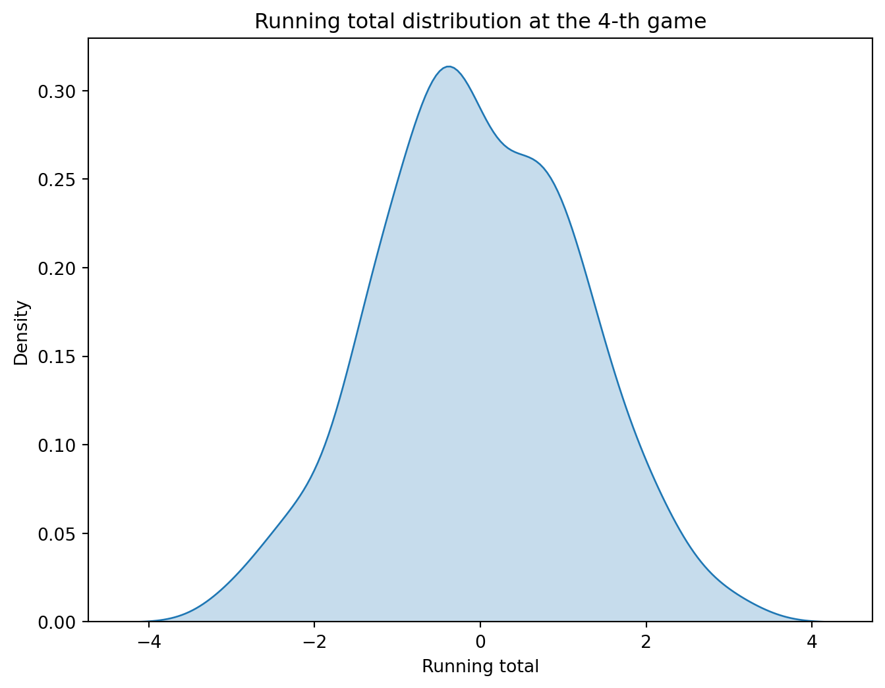
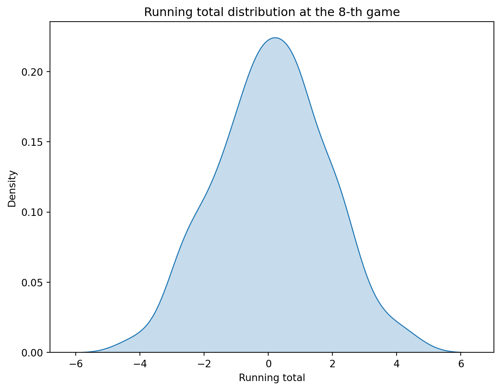

Die Dichtefunktion dieser Verteilung ist konstant in [-1, 1] und ist gleich null ausserhalb dieses Intervalls.
import matplotlib.pyplot as pltimport numpy as npimport pandas as pdimport seaborn as snsfrom scipy import stats# Define the range of xx = np.linspace(-2, 2, 1000)# Calculate the density of the uniform distributiony = stats.uniform.pdf(x, loc=-1, scale=2)# Create the plotplt.figure(figsize=(8, 6))plt.plot(x, y)plt.xlim([-2, 2])plt.xlabel('x')plt.ylabel('Dichte')
Text(0, 0.5, 'Dichte')

# Dieses zieht 10 Zufallszahlen aus einer Gleichverteilung auf dem Intervall [-1, 1]x_unif = np.random.uniform(low=-1, high=1, size=10)x_unif
# Wie viele der Zufallszahlen sind kleiner als 0? Hinweis: benutzen Sie den logischen Operator <np.sum(x_unif <0)# Wie viele der Zufallszahlen befinden sich im Intervall [0, 0.5]? Hinweis: benutzen Sie die logischen Operatoren < und >.# Sie können die beiden logischen Operatoren auch kombinieren, indem Sie den Operator & (logisches AND) verwenden.# Benutzen Sie np.sum, um die Anzahl der Zufallszahlen zu zählen, die die Bedingung erfüllen.np.sum((x_unif >0) & (x_unif <0.5))
3
# Der folgende Code berechnet die Wahrscheinlichkeit, dass das Ereignis X < 0 eintritt. (https://docs.scipy.org/doc/scipy/reference/generated/scipy.stats.uniform.html)stats.uniform.cdf(0, loc=-1, scale=2)# Der folgende Code berechnet die Wahrscheinlichkeit, dass das Ereignis X < 0.5 eintritt (under der Gleichverteilung auf [-1, 1]).stats.uniform.cdf(0, loc=-1, scale=2)# Berechnen Sie die Wahrscheinlichkeit, dass das Ereignis X > 0.5 eintritt.1- stats.uniform.cdf(0.5, loc=-1, scale=2)# Berechnen Sie die Wahrscheinlichkeit, dass das Ereignis X im Intervall [0, 0.5] eintritt.stats.uniform.cdf(0.5, loc=-1, scale=2) - stats.uniform.cdf(0, loc=-1, scale=2)# Vergleichen Sie diese Wahrscheinlichkeit mit der Anzahl der Werte in der Simulation, die im Intervall [0, 0.5] liegen.np.sum((x_unif >0) & (x_unif <0.5))
3
10.1 Die Normalverteilung
Die Familie der Normalverteilungen wird durch zwei Parameter definiert: den Erwartungswert \mu und die Standardabweichung \sigma. Die Dichte der Normalverteilung ist gegeben durch die Formel:
Weil wir diese Verteilung sehr oft benutzen werden, führen wir eine spezielle Notation für die Normalverteilung ein:
X \sim N(\mu, \sigma^2)
In dieser Notation bedeutet X ist normalverteilt mit Erwartungswert \mu und Varianz \sigma^2. Sie brauchen die Formel für die Dichte der Normalverteilung nicht auswendig zu lernen, allerdings müssen Sie wissen, wie die Dichte in Abhängigkeit von den Parametern \mu und \sigma aussieht.
# Define the means and standard deviationsmeans = [0, 2]sds = [0.2, 0.5, 1]# Create a grid of x valuesx = np.linspace(-3, 5, 200)# Create a DataFrame with all combinations of means, sds, and x valuesdf = pd.DataFrame([(mean, sd, x_val, stats.norm.pdf(x_val, mean, sd)) for mean in means for sd in sds for x_val in x], columns=['mean', 'sd', 'x', 'y'])# Create labels for mean and sddf['mean'] ='mu = '+ df['mean'].astype(str)df['sd'] ='sigma = '+ df['sd'].astype(str)# Plotplt.figure(figsize=(8, 6))sns.lineplot(data=df, x='x', y='y', hue='mean', style='sd')plt.xlabel('x')plt.ylabel('Dichte')
/usr/share/miniconda/envs/econ2024/lib/python3.11/site-packages/seaborn/_oldcore.py:1119: FutureWarning:
use_inf_as_na option is deprecated and will be removed in a future version. Convert inf values to NaN before operating instead.
/usr/share/miniconda/envs/econ2024/lib/python3.11/site-packages/seaborn/_oldcore.py:1119: FutureWarning:
use_inf_as_na option is deprecated and will be removed in a future version. Convert inf values to NaN before operating instead.
Text(0, 0.5, 'Dichte')

Eine Art und Weise, wie eine Normalverteilung entstehen kann, ist die Summe von unabhängigen Zufallsvariablen. Das ist der Inhalt des Zentralen Grenzwertsatzes, der besagt, dass die Summe von unabhängigen Zufallsvariablen, die nicht notwendigerweise normalverteilt sind, für eine große Anzahl von Summanden normalverteilt ist.
Um den Zentralen Grenzwertsatz zu illustrieren, betrachten wir das folgende Spiel.
players_n =300games_n =16# Create a DataFrame similar to expand_grid in Runif_games = pd.DataFrame( np.array( np.meshgrid( np.arange(1, games_n +1), np.arange(1, players_n +1) )).T.reshape(-1, 2), columns=['game', 'player'])# Add result column with random uniform values between -1 and 1unif_games['result'] = np.random.uniform(-1, 1, size=len(unif_games))# Add initial values for each playerinitial_values = pd.DataFrame( {'player': np.arange(1, players_n +1), 'game': 0, 'result': 0})unif_games = pd.concat([unif_games, initial_values])# Sort values and calculate running total for each playerunif_games = unif_games.sort_values(['player', 'game'])unif_games['running_total'] = unif_games.groupby('player')['result'].cumsum()# Plottingplt.figure(figsize=(10, 6))for player in unif_games['player'].unique(): player_data = unif_games[unif_games['player'] == player] plt.plot(player_data['game'], player_data['running_total'], color='skyblue', alpha=0.2)# First playerplayer_data = unif_games[unif_games['player'] ==1]plt.plot(player_data['game'], player_data['running_total'], color='firebrick', label='Player 1')plt.axhline(0, color='black')for mark in [4, 8, 16]: plt.axvline(x=mark, linestyle='--', color='black')plt.xlabel('Spiel')plt.ylabel('Gesamtgewinn')plt.xticks([0, 4, 8, 12, 16])
([<matplotlib.axis.XTick at 0x7fb6b8116450>,
<matplotlib.axis.XTick at 0x7fb6b80ed210>,
<matplotlib.axis.XTick at 0x7fb6b8a82450>,
<matplotlib.axis.XTick at 0x7fb6b7d90d90>,
<matplotlib.axis.XTick at 0x7fb6b7d92d10>],
[Text(0, 0, '0'),
Text(4, 0, '4'),
Text(8, 0, '8'),
Text(12, 0, '12'),
Text(16, 0, '16')])

game_4 = unif_games[unif_games['game'] ==4]plt.figure(figsize=(8, 6))sns.kdeplot(data=game_4, x='running_total', fill=True)plt.title('Running total distribution at the 4-th game')plt.xlabel('Running total')
/usr/share/miniconda/envs/econ2024/lib/python3.11/site-packages/seaborn/_oldcore.py:1119: FutureWarning:
use_inf_as_na option is deprecated and will be removed in a future version. Convert inf values to NaN before operating instead.
Text(0.5, 0, 'Running total')

# Erstellen Sie die Dichteschätzung für das 8. Spiel und das 16. Spiel.game_8 = unif_games[unif_games['game'] ==8]plt.figure(figsize=(8, 6))sns.kdeplot(data=game_8, x='running_total', fill=True)plt.title('Running total distribution at the 8-th game')plt.xlabel('Running total')
/usr/share/miniconda/envs/econ2024/lib/python3.11/site-packages/seaborn/_oldcore.py:1119: FutureWarning:
use_inf_as_na option is deprecated and will be removed in a future version. Convert inf values to NaN before operating instead.
Text(0.5, 0, 'Running total')

game_16 = unif_games[unif_games['game'] ==16]plt.figure(figsize=(8, 6))sns.kdeplot(data=game_16, x='running_total', fill=True)plt.title('Running total distribution at the 16-th game')plt.xlabel('Running total')
/usr/share/miniconda/envs/econ2024/lib/python3.11/site-packages/seaborn/_oldcore.py:1119: FutureWarning:
use_inf_as_na option is deprecated and will be removed in a future version. Convert inf values to NaN before operating instead.